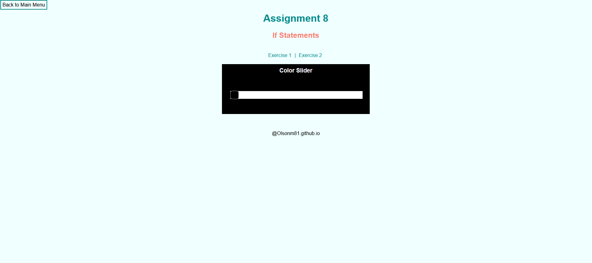
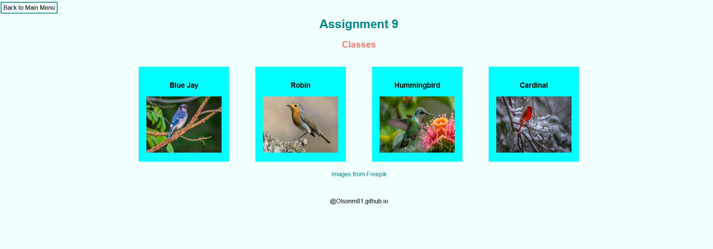

Assignment 1 - Basic HTML

The first assignment was working to make a website using basic HTML code. For this website I made it about two National Parks which were Yellowstone National Park and the Grand Canyon.
Assignment 2 - Basic CSS
For the second assignment I worked with combining both HTML and CSS. For this website I made it about the pyramids in Giza.
Assignment 3 - Page layout
For the third assignment I worked with flexboxes to make a copy of a picture of a website layout. This website would change depending on the screen size of the device viewing it.
Assignment 4 - Remake CSS
For the forth assignment we were tasked with created a remake of the universities graduate website. Not every detail was required just the main look was necessary for this assignment.
Assignment 5 - JavaScript Functions
The fifth assignment had us make 3 columns on our website in html. Inside of each column is something that is made using JavaScript. This is a start as this is the first assignment that uses JavaScript.
Assignment 6 - Conditionals
The sixth assignment we built upon javascripting from the previous assignment by making color slider, picture size chooser and a toggle menu for smaller screens.
Assignment 9 - Classes
For the ninth assignment we have a list of items and information that is stored in classes. You are able to click on one of the images and it will display informaiton about the bird.